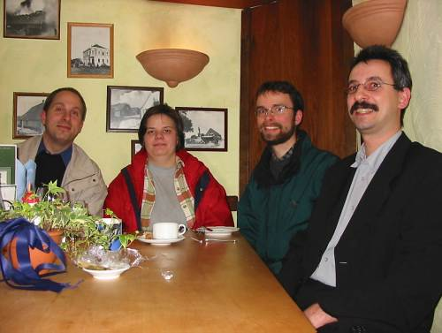

|

|
||||||||||
Treffen am 21.02.2002
Wir haben uns um 19:00 Uhr im Hotel zur Linde getroffen. Bernd und Jan kamen mit frischen Eindrücken vom 4. Perlworkshop in St. Augustin und haben darüber berichtet.
Einhellige Meinung der beiden: ein Besuch des Perlworkshop lohnt sich. Dieser findet auch nächstes Jahr wieder ab Aschermittwoch in St. Augustin statt.

Jan, Regina, Markus, Bernd in der Up-Kammer
| The use of the camel image in association with the Perl language is a trademark of O'Reilly & Associates, Inc. Used with permission. |